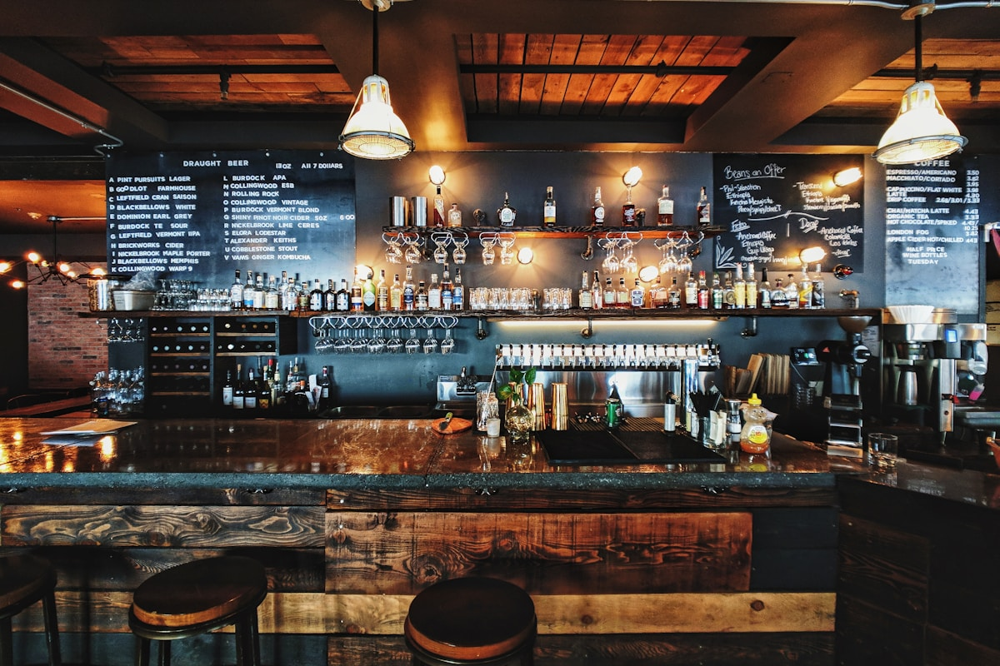

In the culinary evaluation of dinner noodles, critical discussions routinely focus on the elasticity of the wheat strand, the clarity of the broth, and the complexity of the seasonings. Yet one decisive parameter is frequently overlooked: the thermal kinetics of the dining vessel itself. A sublime bowl of noodles plated in a thin, cold porcelain bowl will lose upwards of fifteen degrees Celsius within five minutes, collapsing delicate volatile aromatics and causing unconsumed noodles to absorb cooling, fatty broth prematurely.
At NoodleTable, our ceramic ware is not an aesthetic afterthought chosen from commercial restaurant catalogs. Every vessel used in our Mercer Street dining room is custom-sculpted by regional ceramic artisans from dense, iron-rich stoneware clay. In this paper, we present a thermodynamic study examining the specific heat capacity, convective surface cooling rates, and geometric architecture of heavy stoneware bowls across an authentic twenty-minute dinner service.

1. Thermodynamic Principles of Noodle Service
When hot broth at 92°C is ladled into a serving vessel, thermal energy dissipates through four primary physical mechanisms:
- Conductive Heat Transfer: Thermal conduction from the hot liquid into the physical mass of the bowl walls and base.
- Convective Atmospheric Loss: Upward buoyant air currents sweeping across the exposed surface liquid, carrying away thermal energy.
- Evaporative Cooling: High-energy water molecules escaping as vapor from the surface, absorbing latent heat of vaporization (approx. 2,260 J/g).
- Radiant Heat Emission: Infrared radiation emitted outward from the heated exterior ceramic surface.
The total heat capacity of a bowl is governed by the equation Q = m × c × ΔT, where m represents mass in kilograms and c represents the specific heat capacity of the ceramic material. A lightweight porcelain bowl weighing 320 grams absorbs very little heat and quickly radiates its energy away. A heavy stoneware bowl weighing 850 grams possesses nearly three times the thermal inertia, acting as a radiant thermal accumulator.
| Vessel Material Type | Wall Thickness | Specific Heat (J/kg·K) | Temp at 5 Min (°C) | Temp at 15 Min (°C) |
|---|---|---|---|---|
| Thin Commercial Porcelain | 2.8 mm | 840 | 71.4°C | 54.2°C |
| Standard Vitrified Melamine | 3.5 mm | 1,420 | 73.8°C | 58.1°C |
| NoodleTable Heavy Stoneware | 7.5 mm | 960 | 82.6°C | 72.8°C |
| Unpreheated Stoneware | 7.5 mm | 960 | 68.2°C (Thermal Shock) | 59.4°C |
2. The Critical Pre-Warming Protocol
A heavy stoneware bowl possesses substantial thermal mass. However, if that bowl is cold when broth is ladled into it, its very mass becomes a thermal liability: it acts as a massive heat sink, drawing upwards of 20°C out of the broth within sixty seconds to reach equilibrium.
To eliminate this destructive thermal shock, NoodleTable operates dedicated dry convection warming cabinets maintained at 72°C. Every stoneware bowl remains inside these cabinets until the precise moment of assembly. When scalding broth enters a pre-warmed bowl, virtually zero thermal transfer occurs between broth and ceramic, allowing the full energy of the broth to remain concentrated within the soup and noodle strands.
3. Geometric Architecture: Conical vs. Cylindrical Profiles
The physical silhouette of a noodle bowl plays an enormous role in controlling evaporative surface cooling and aromatic delivery. Wide, shallow bowls (resembling pasta plates) expose immense surface surface area to ambient air, accelerating heat loss and allowing delicate aromatics to scatter prematurely.
Our custom Mercer Street bowls feature a narrow conical angle of 58 degrees with a thick, elevated foot rim:
- Reduced Evaporative Surface: The tapered cone minimizes the exposed liquid surface area while providing ample depth to keep noodles fully submerged in broth.
- Aromatic Funnel: The inward slope of the upper rim channels rising steam and volatile esters upward toward the diner's nose during consumption.
- Thermal Base Isolation: The heavy, hollowed foot rim elevates the bowl 15 millimeters above the wooden dining table, eliminating conductive heat loss into the furniture.

4. Iron-Rich Clays & Tactile Sensory Psychology
Beyond pure physics, the tactile interaction with a heavy ceramic bowl profoundly influences human flavor perception. Neurogastronomy experiments conducted by sensory scientists have demonstrated that diners perceive food consumed from heavier, textured tableware as significantly more flavorful, savory, and satisfying than identical food served in lightweight plastic or thin porcelain.
Our stoneware bowls feature unglazed, stone-textured bases with organic wood-ash glazes along the upper lip. When guests cradle the warm, weighted vessel in their hands to sip broth, the tactile sensation of earthy stoneware activates multisensory expectations of nourishment, craftsmanship, and warmth that define an evening at NoodleTable.
Frequently Asked Technical Questions
No, noodles are cooked in large dedicated boiling cauldrons. The bowl only affects post-plating thermal decay. However, pre-warmed heavy bowls prevent noodles from softening prematurely by preserving a stable eating temperature.
Yes. The lower foot rim and upper lip of the bowl remain at a comfortable 45°C to 50°C, providing natural touch points that protect diners' fingers while the core belly of the bowl retains intense heat.
Bowls undergo gentle wash cycles using neutral pH detergents and are air-dried naturally before returning to temperature-regulated warming cabinets, ensuring long-term ceramic durability without micro-fracturing.